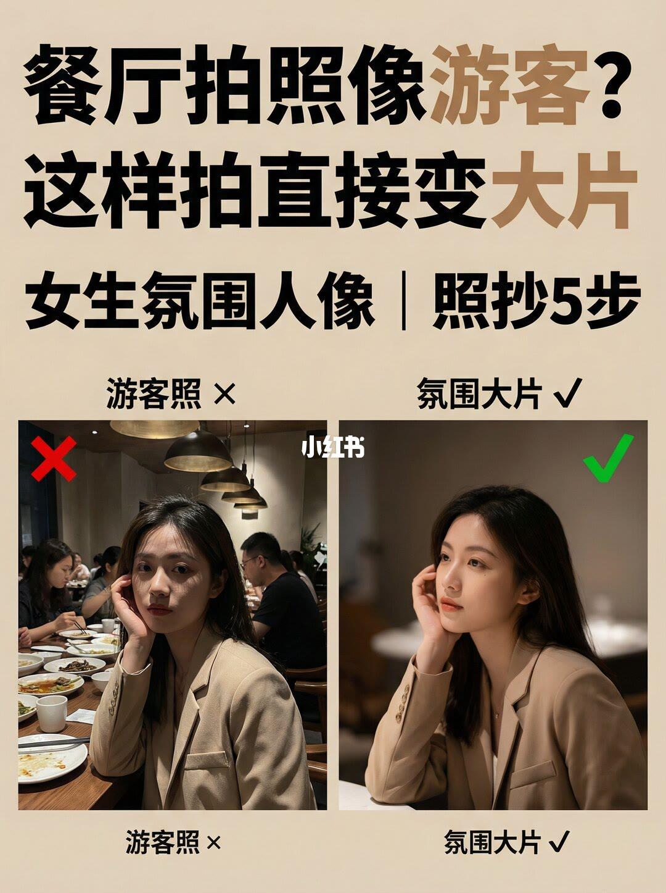
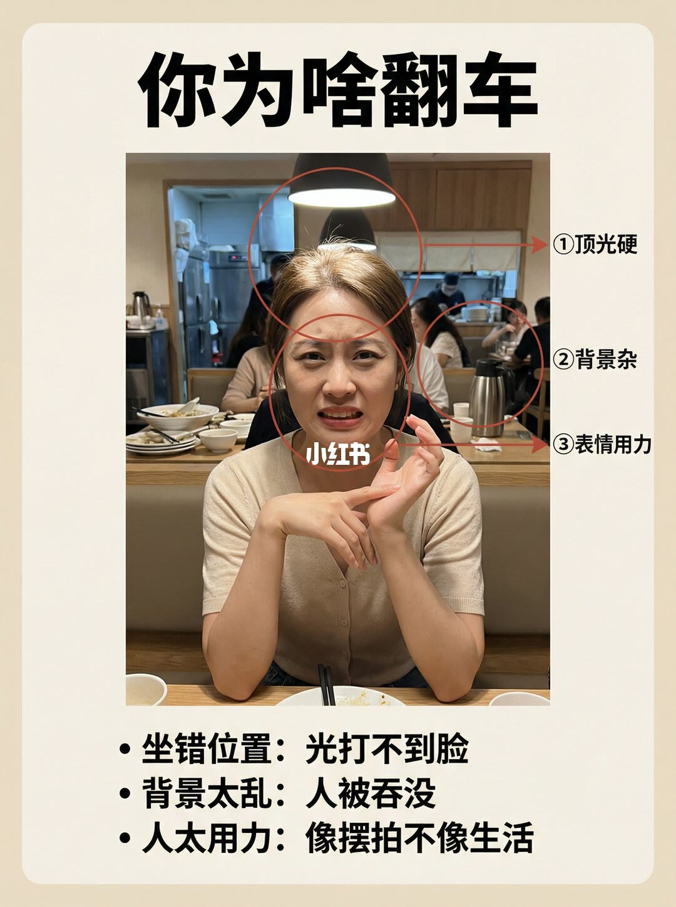
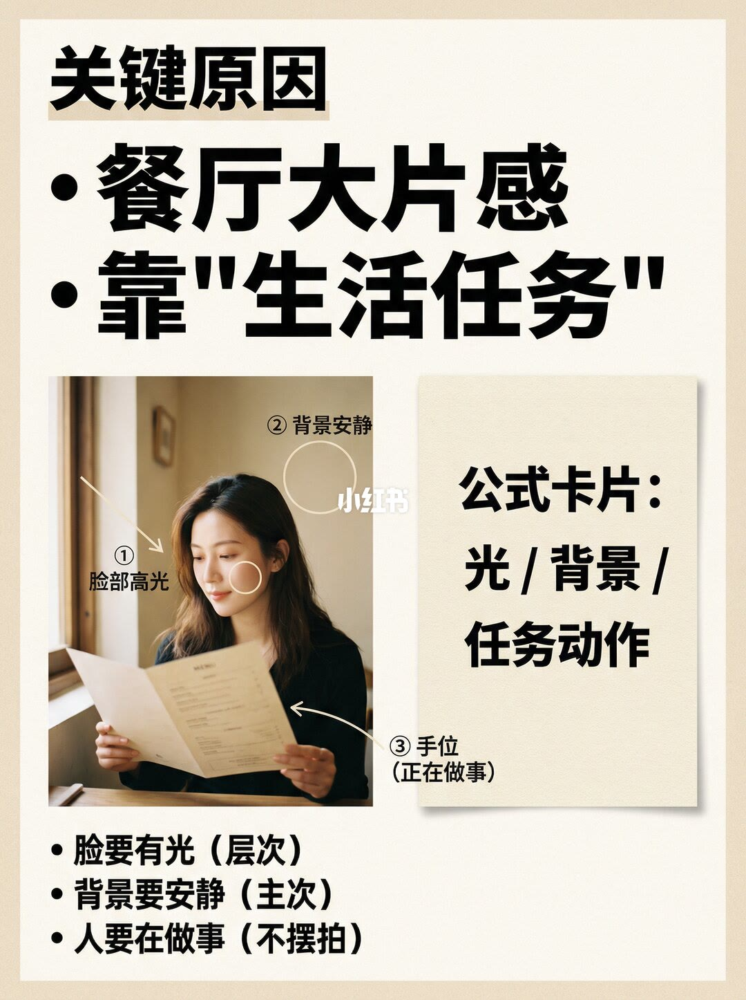
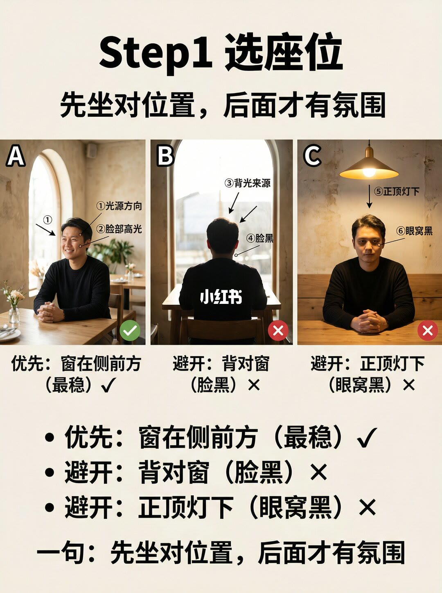
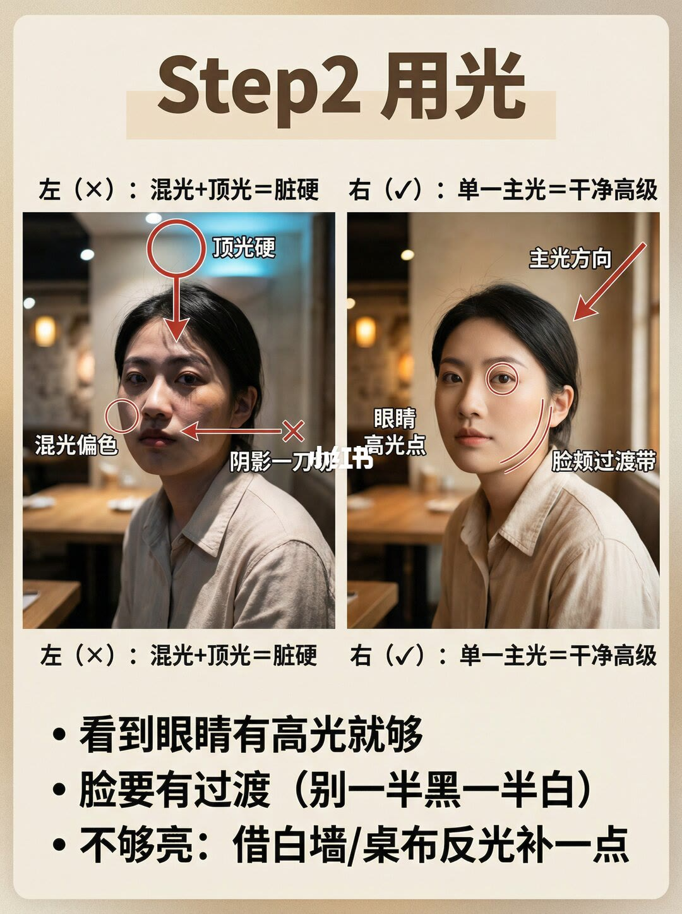
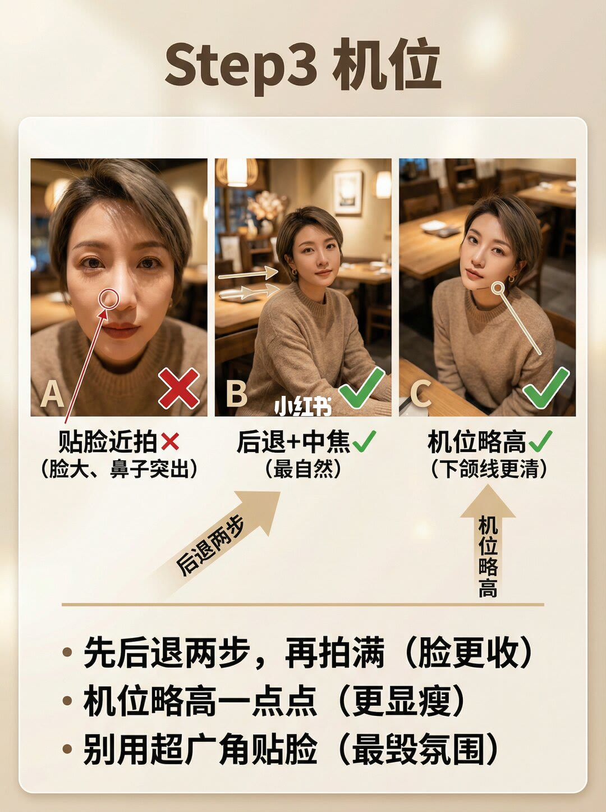
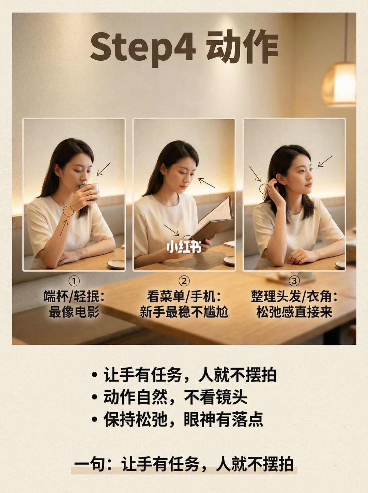
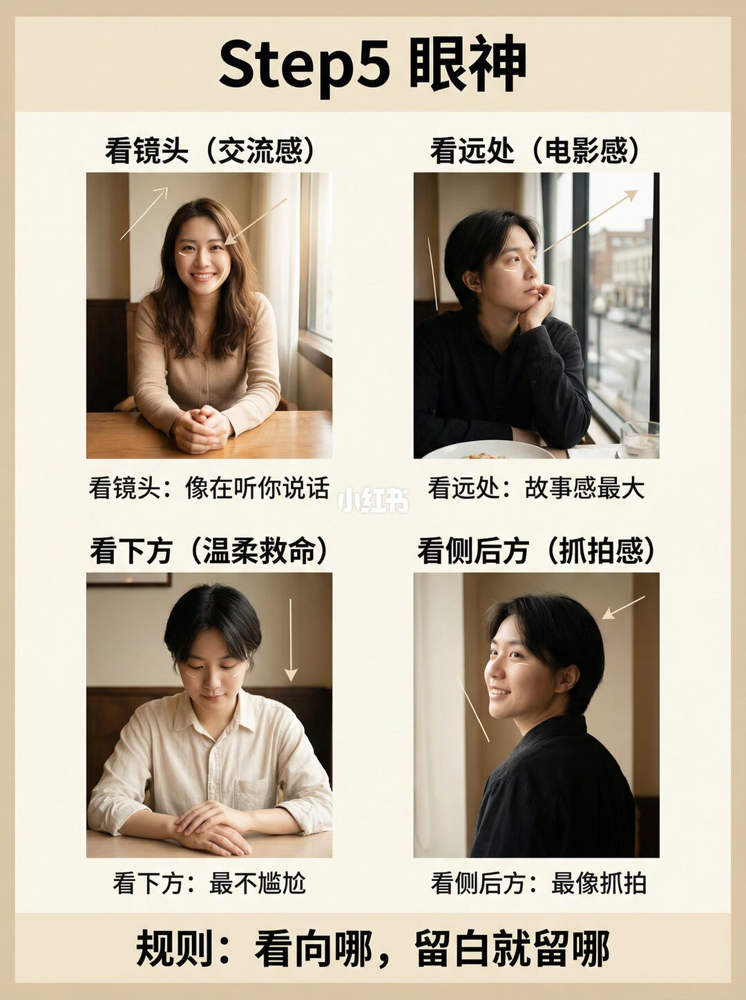
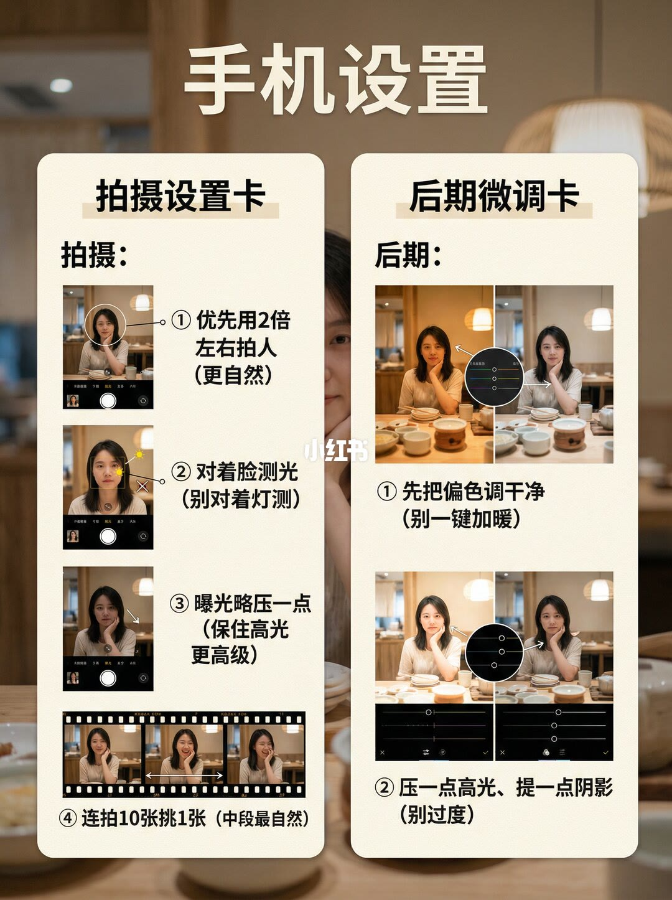
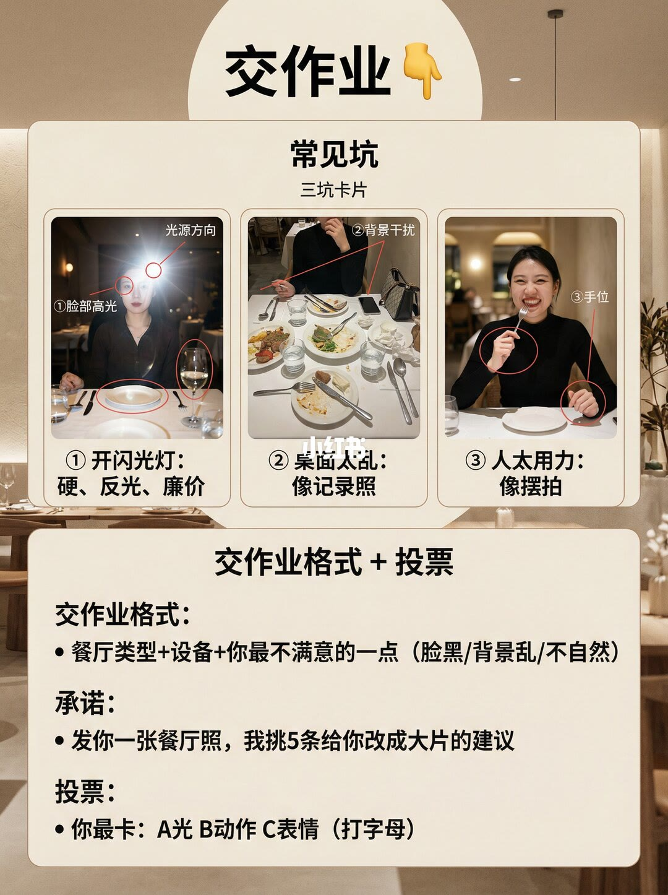

图文实录 · 小红书 · 爱拍照的七十(努力涨粉中)
餐厅拍照像游客？这样拍直接变大片
像游客，是因为人坐在顶光或背光里、背景把人吞掉、手和表情都在用力。大片感靠一套生活任务：窗放在侧前方，只留一个主光让脸有过渡、眼睛有高光；先后退两步再用中焦拍满，机位略高；手去端杯、看菜单或整理头发衣角，视线落到远处、下方或侧后方。滤镜不是这套流程的第一步。
1/10
封面：游客照和氛围大片

标题是「餐厅拍照像游客？这样拍直接变大片」。副题写「女生氛围人像 | 照抄 5 步」。左栏标「游客照 ×」，右栏标「氛围大片」。两栏都是餐厅桌前人像，左宽右紧、左背景更乱右背景更暗更虚。五步本身不在这一页展开。左右是否同一人、同一桌，画面无法确认。
2/10
翻车就这三处

标题「你为啥翻车」。示例人像上圈了三处：①顶光硬，②背景杂，③表情用力。页底三条：坐错位置，光打不到脸；背景太乱，人被吞没；人太用力，像摆拍不像生活。灯的瓦数、背景里具体物件的清单，标注没有写全。
3/10
大片感靠生活任务

标题「关键原因 · 餐厅大片感 · 靠『生活任务』」。示例上标了①脸部高光、②背景安静、③手位（正在做事）。右侧公式卡片写「光 / 背景 / 任务动作」。页底：脸要有光（层次）；背景要安静（主次）；人要在做事（不摆拍）。这一页的动作示例是低头看手中的菜单，没有给焦距或曝光数字。
4/10
第一步：先坐对座位

标题「Step1 选座位」，副题「先坐对位置，后面才有氛围」。A 标优先：窗在侧前方（最稳），箭头写光源方向和脸部高光。B 标避开：背对窗（脸黑），箭头写背光来源和脸黑。C 标避开：正顶灯下（眼窝黑），箭头写正顶灯下和眼窝黑。页底原句重复这三条，并再写一句：先坐对位置，后面才有氛围。「侧前方」没有给出角度数字。
5/10
第二步：只留一个主光

标题「Step2 用光」。左（×）：混光 + 顶光 = 脏硬，能读清的标注是顶光硬、混光偏色；阴影交界处红字读到「阴影一刀」，末字无法确认。右（✓）：单一主光 = 干净高级，能读清主光方向、脸颊过渡带；眼睛附近标注只确认到「眼睛」，是否写全「眼睛高光点」无法确认。页底三条写得很完整：看到眼睛有高光就够；脸要有过渡（别一半黑一半白）；不够亮就借白墙或桌布反光补一点。没有光比，也没有色温数值。
6/10
第三步：先后退，再略抬机位

标题「Step3 机位」。A 贴脸近拍 ×（脸大、鼻子突出）。B 后退 + 中焦（最自然），图中箭头写「后退两步」。C 机位略高（下颌线更清）。页底：先后退两步，再拍满（脸更收）；机位略高一点点（更显瘦）；别用超广角贴脸（最毁氛围）。「两步」和「中焦」「超广角」都没有毫米焦距或机位高度的厘米数。
7/10
第四步：给手一个任务

标题「Step4 动作」。①端杯 / 轻抿：最像电影。②看菜单 / 手机：新手最稳不尴尬。③整理头发 / 衣角：松弛感直接来。页底：让手有任务，人就不摆拍；动作自然，不看镜头；保持松弛，眼神有落点。收束句再次写：让手有任务，人就不摆拍。三张是否同一人，画面无法确认。
8/10
第五步：视线决定留白

标题「Step5 眼神」。看镜头（交流感）：像在听你说话。看远处（电影感）：故事感最大。看下方（温柔救命）：最不尴尬。看侧后方（抓拍感）：最像抓拍。页底规则：看向哪，留白就留哪。这一页把看镜头保留成一种可用眼神，和上一页「不看镜头」并排时，没有写清各自适用的比例。四张示例是否同一场景无法确认。
9/10
手机怎么拍、怎么收

标题「手机设置」，分成拍摄设置卡和后期微调卡。拍摄：①优先用 2 倍左右拍人（更自然）；②对着脸测光（别对着灯测）；③曝光略压一点（保住高光更高级）；④连拍 10 张挑 1 张（中段最自然）。后期：①先把偏色调干净（别一键加暖）；②压一点高光、提一点阴影（别过度）。示意图上有曝光滑块，具体补偿档位无法确认。2 倍是手机界面倍率，不是镜头毫米数。
10/10
三个坑，外加交作业

标题「交作业」，上半是常见坑、三坑卡片。①开闪光灯：硬、反光、廉价，图上还标了脸部高光和光源方向。②桌面太乱：像记录照，标注指向背景干扰。③人太用力：像摆拍，标注指向手位。下半是交作业格式：餐厅类型 + 设备 + 你最不满意的一点（脸黑 / 背景乱 / 不自然）。承诺：发一张餐厅照，挑 5 条给你改成大片的建议。投票：你最卡 A 光、B 动作、C 表情，打字母。挑选标准、回复时限，页上没有写。
收尾
先坐对，再留一个主光，再给手任务
结论
餐厅照不像游客，靠的是座位、单一主光和生活任务，不是先加暖。窗放在侧前方；背对窗和正顶灯下先避开。脸要有亮暗过渡，看到眼睛高光就够，不够亮用白墙或桌布补一口。机位先后退两步再拍满，略高一点，别用超广角贴脸。手去端杯、看菜单手机或整理头发衣角；视线给一个落点，留白跟视线走。手机用 2 倍左右、对脸测光、曝光略压、连拍再挑；后期先去偏色，再轻压高光、轻提阴影。
支撑页
游客照和氛围大片的对照在 1/10。翻车三因在 2/10。光、背景、任务动作的公式在 3/10。座位三种在 4/10。混光顶光和单一主光在 5/10。机位三档在 6/10。三个手部任务在 7/10。四种眼神和留白规则在 8/10。手机拍摄与后期在 9/10。闪光灯、乱桌面、用力摆拍三个坑和交作业格式在 10/10。
边界
十页都没有光比、色温、快门或感光度。第 4 页的「侧前方」、第 6 页的「两步」「中焦」「超广角」都没有换算成角度、厘米或毫米。第 5 页阴影交界的红字只确认到「阴影一刀」，末字无法确认；眼睛旁标注只确认到「眼睛」。第 7 页写不看镜头，第 8 页又把看镜头留成交流感，两页没有给出切换条件。第 9 页的 2 倍是手机倍率，曝光滑块的具体档位无法确认。第 10 页「挑 5 条」没有标准。示例是否同一人、是否实拍，画面无法确认。原笔记文案里的「先后退两步再拍满」「机位略高一点更显瘦」与第 6 页一致；文案未单列闪光灯和手机设置，这两项以第 9、10 页为准。